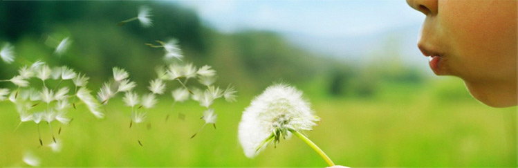

希望工程
在我国，由于地域辽阔，国家经济发展不均衡，部分地区尤其是边远贫困地区存在许多少年儿童失学的问题。一些科研和教育部门由于资金筹备方面的不足，制约了教育事业进一步的发展，这对中国保持长期、快速、稳定发展及提高全民族素质是非常不利的。
情系教育，海尔奉献真诚。海尔集团首席执行官张瑞敏特别关注少年儿童和教育事业，“我们始终认为一个企业要发展，离不开社会各界的帮助与支持，所以，企业发展起来以后，应该很好的回报社会，海尔回报社会从一开始就是致力于儿童教育方面。”张瑞敏如是说。海尔集团第一座工业园从1995年正式落成，也就是这一年，海尔集团捐资38万元援建了第一所海尔希望小学――莱西武备海尔希望小学，从而拉开了海尔集团在全国贫困地区援建希望小学的序幕。
海尔集团用于社会公益事业的资金和物品总价值已达5亿余元，其中用于希望工程方面的捐款、捐物超过了8000万元，截至2015年5月，海尔援建的希望学校总数已达到206所（205所希望小学，1所希望中学）。
海尔希望小学的建设，体现了全体海尔人奉献社会的拳拳爱心。希望工程是一项功在当代、利在千秋的公益事业，海尔希望小学的建设，不仅为发展我国贫困地区的基础教育事业，改善落后地区的办学条件做出积极贡献，而且在全社会倡导了一种关心支持教育、关心下一代成长的新风尚。海尔人在公益事业上的爱心奉献举不胜举！海尔人在公益事业上的动人之举有口皆碑！在海尔不断发展壮大，创世界自主品牌的进程中海尔将继续在“真诚回报社会”宗旨的指导下，弘扬中华民族的优良传统，继续关注并鼎立支持公益事业，为中国的公益事业做出更大贡献。
海尔真诚到永远！
历年援建海尔希望小学名单（205所）及一所中学
绿帆• 希望工程大事记
1995年08月01日在青岛市莱西武备镇，援建了第一所海尔希望小学，从此拉开了希望工程事业的序幕
2003年11月01日海尔集团被授予山东省"捐资助学先进 单位"
2004年01月09日中国青基会秘书长顾晓今女士专程来青向海尔集团首席执行官张瑞敏赠送了"捐资助学特殊贡献单位"牌匾M
2006年06月08日中国公益事业联合会因海尔集团在希望工程方面做出的突出贡献，授予海尔集团首席执行官张瑞敏"中国公益事业十大贡献人物"称号，授予海尔集团"中国公益事业十大 贡献集体"称号
2007年05月28日在青岛市即墨灵山启动了"海尔奥运希望工程活动"，海尔向青岛市青少年发展基金会捐赠海尔奥运希望工程基金
2007年12月03日"海尔全力支持北京2008年奥运会中国体育代表团暨海尔奥运希望小学启动仪式"在京举行。为了表彰中国健儿的奋勇拼搏精神， 海尔集团将不仅为获得金牌的中国运动员赠送整套家电，同时启动"海尔奥运希望小学"计划，即中国健儿每获得一枚奥运金牌，海尔即捐建一所希望小学，让"奥 运之光，点燃希望"，把奥运精神带到希望小学的小朋友身边
2008年05月27日海尔集团首席执行官亲赴四川灾区，看望九州体育馆的孩子。经集团董事会 决定，捐资1000万元，在北川援建1所中学。捐资750万元，在北川援建15所希望小学
2008年08月24日为期17天的北京奥运会已经圆满闭幕， 通过健儿们的奋力拼搏，中国体育代表团交出了一份堪称优异的答卷，在邹市明和张小平为中国夺得两枚奥运拳击金牌之后，中国以51枚金牌的成绩傲据金牌榜第 一。相应的海尔"一枚金牌，一所希望小学"计划也遍地开花――共捐建希望小学51所，遍布全国25个省，其中就包括四川北川地震灾区的15所，4万多名贫 困地区的孩子也因此收获了"希望"，有了新的学校
2008年10月30日山东沂南县砖埠海尔希望小学奠基，成为第一所奠基的海尔奥运希望小 学
2008年12月31日青岛即墨市刘家庄镇海尔希望小学揭牌，成为第一所投入使用的海尔奥运希望小学
2009年08月25日海尔出资1000万元援建的四川北川陈家坝中学正式落成使用。海尔承诺，海尔集团将持续关注灾区，关注北川，关注陈家坝中学，要和当地政府一起，将海尔陈家坝中学建设成为一所教书育人先进模范学校。
2010年10月21日在中国版图最西部的喀什地区岳普湖县巴依阿瓦提乡，一所名为“巴依阿瓦提乡海尔希望小学”的学校正式揭牌。
2011年09月08日云南盈江海尔希望小学举行奠基仪式，标志着海尔在08年北京奥运“一枚金牌，一所希望小学”的承诺完全兑现。
2012年10月16日沾化县富源街道海尔希望小学竣工，全校361名学生和25名教师告别平房搬进了新的教学楼。
2012年11月16日贵州省天柱县邦洞镇海尔希望小学竣工落成。这是海尔集团兴建的第165所希望小学，也是海尔集团在贵州兴建的第7所希望小学。
2013年04月26日莱西市马连庄镇李家草泊海尔美国希望小学竣工，改善200余名农村小学生的学习环境。
2013年05月24日山东省商河县张坊乡海尔希望小学揭牌，海尔集团向同学们捐赠了书包、文具、图书及其他学习用品。
2013年05月29日贵州省龙里县羊场镇海尔希望小学落成，海尔集团捐赠电脑26台，价值8万多元，捐资方为400多名学生提供3000多元的文具、体育用品，还捐助3000元给30名贫困学生。
2013年06月03日梁平县蟠龙镇新店村海尔希望小学竣工，新店海尔希望小学占地面积2776平方米,建筑面积400平方米,服务半径为该县蟠龙、大观、柏家等镇的6个村,可容纳200名学生就读。
2013年09月15日海尔在新疆英吉沙县援建的希望小学揭牌。在揭牌仪式现场，海尔向青基会捐赠了600万用于2013年全国希望小学的建设。
2014年05月30日河北省沧州市海兴县赵毛陶镇海尔希望小学正式落成，今后6个班级的130名学生将在全新的环境中学习，健康快乐成长，至此海尔也完成了在全国第200所希望小学的捐建。
2014年11月25日中国青少年发展基金会在北京召开希望工程25年大会表彰大会，海尔集团凭借对希望工程的长期投入以及互联网时代下探索的公益新模式获得“希望工程杰出贡献奖”。
2014年12月05日海尔在青岛胶州市援建的胶西海尔希望小学落成，青岛团市委、胶州市委以及海尔集团的相关领导出席了活动，并为“海尔爱心电脑室”揭牌。到目前为止，海尔是团中央希望工程中捐建希望小学最多的中国企业。
2015年04月29日海尔在山东临沂捐建的郯城县海尔希望小学正式竣工。这所希望小学位于郯城县泉源乡李五湖村，是山东省第1000所、也是海尔捐建的第206所希望小学。山东省、临沂市、郯城县各级领导、海尔集团相关领导出席竣工仪式，与该校全体师生共同见证了这一重要时刻，并为山东第1000所希望小学纪念牌揭牌。